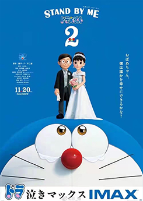

中文名称：哆啦A梦 原版名称：ドラえもん 英文名称：Doraemon 其他名称：小叮当 动画类型：科幻、冒险 制片地区：日本 对白语言：日语 动画原作：藤子·F·不二雄 作画监督：丸山宏 动画集数：连载中 连载时间：1970年—1996年 出品公司：Shin-Ei动画
动画导演：楠叶宏三、善聪一郎 大杉宣弘、木野雄、小仓宏文 动画编剧：大野木宽、清水东 小岛俊彦、三宅圭贵、伊藤公志 与口奈津江、水野宗德 动画主演：哆啦A梦、野比大雄 刚田武、骨川小夫 动画制作：Shin-Ei动画 色彩设计：堀越智子，户部弥生 代理发行：艾影、杰外动漫 动画分级：G（日本电视动漫文化节） 播放时间：2005年4月15日-至今
某天，大雄（大原惠美 配）偶然发现了童年时奶奶为自己缝制的玩偶熊，于是央求哆啦A梦（水田山葵 配）去往过去看望已不再人世的奶奶（宫本信子 配），大雄与奶奶重逢之后，奶奶希望能看到大雄长大结婚时的样子，答应奶奶的大雄与哆啦A梦则再一次的返回了未来，婚礼如期举行的那天，所有人都到了场，但最重要的新郎成年大雄（妻夫木聪 配）居然不在现场，情急之下，哆啦A梦让大雄假扮成年时的自己与静香结婚（嘉数由美 配），然而真正的成年大雄究竟去了哪里呢。